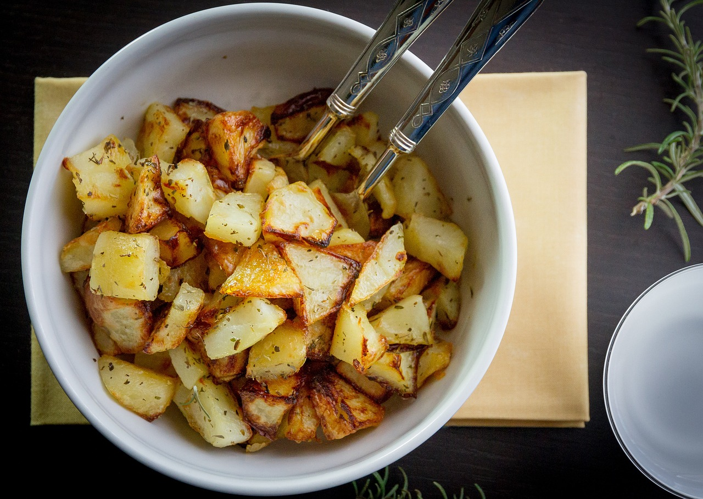

- with the humble potato, a canvas just waiting to be transformed into something extraordinary. Choose the finest specimens, their skins glistening with promise, their flesh creamy and full of potential. Then, with the skill of a culinary maestro, slice them into bite-sized pieces, each one a miniature masterpiece in its own right.
- Now, imagine the aroma that fills the kitchen as you melt butter in a pan, the rich, nutty scent mingling with the sharp tang of fresh garlic. As the garlic sizzles and perfumes the air, its essence infuses the butter, creating a luscious sauce that promises to elevate the potatoes to new heights of flavor.
- With a gentle hand, toss the potatoes in this decadent mixture, ensuring that each piece is coated in a symphony of buttery goodness. Then, as you transfer them to a baking tray and slide them into the oven, watch with anticipation as they begin to roast and caramelize, the butter and garlic melding into a crispy, golden crust that beckons with irresistible allure.
- And when they emerge from the oven, glistening and fragrant, prepare yourself for a sensory feast like no other. The first bite reveals a symphony of textures – the crisp exterior giving way to a creamy, buttery interior that practically melts on the tongue. Each morsel is infused with the heady aroma of garlic, a savory counterpoint to the richness of the butter.
So, whether served as a side dish or savored on their own, our oven-roasted butter garlic potatoes are sure to captivate your palate and leave you craving more. Indulge in this culinary delight and experience the magic of simple ingredients transformed into something truly extraordinary.
HOME